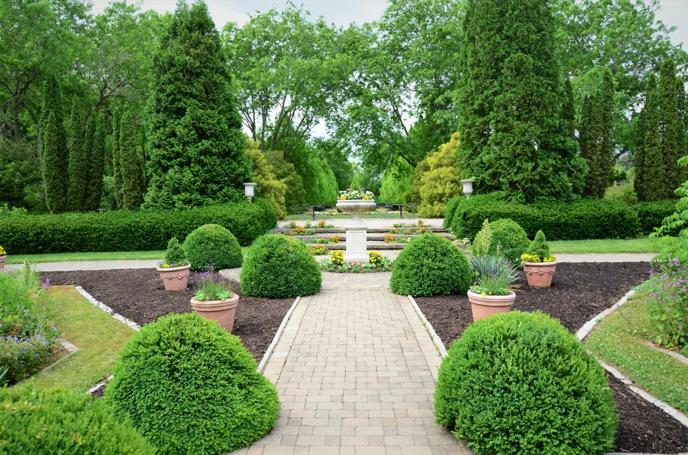
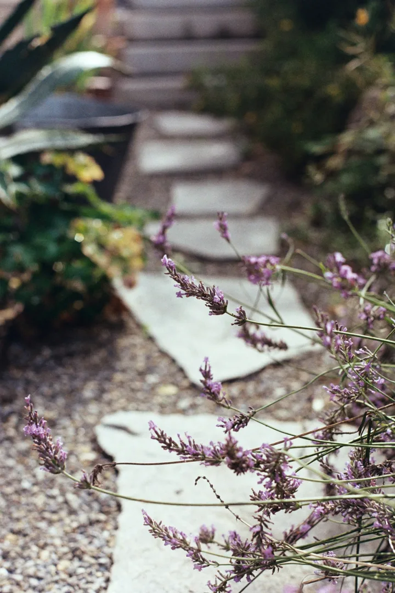

November in the garden: protect, plant and prepare
Seasonal jobs for gardens across Surrey, Hampshire and Sussex.
November is a good time to protect what is already growing and prepare for the quieter months ahead. Work with the conditions in your own garden: avoid planting or working the soil when it is frozen or waterlogged.
Keep leaves off the lawn
Rake fallen leaves from grass so they do not block light and moisture. Add healthy leaves to a leafmould pile or place some at the back of borders where they can break down and provide habitat. Mow only if growth continues during mild weather, and keep off frosty or saturated lawns.
Plant while conditions allow
Bare-root trees, shrubs and hedging become available this month. Plant them promptly when the ground is workable, keeping roots protected from drying out. If the soil is frozen or waterlogged, heel plants into a temporary position until conditions improve.
Protect pots and tender plants
Move tender plants into suitable frost-free shelter. Raise outdoor containers on feet or bricks so they do not sit in winter wet, and insulate larger pots that may be vulnerable to frost. Grouping containers in a sheltered position can give them additional protection.

Check supports and structures
Check tree stakes and ties, loosening any that are beginning to constrict stems. Secure climbers and inspect trellis, fence panels, posts and lightweight structures before winter. Discuss damaged trees or larger branches with a suitably qualified tree professional.
Make a short November list
Walk around the garden and note:
- Lawns and paths that need leaves cleared.
- Pots or tender plants needing protection.
- Stakes, ties, fences or supports needing attention.
- Planting areas that are firm, workable and well drained.
If the list is growing, Blossom can agree a seasonal tidy-up or regular maintenance around the needs of your garden or business grounds.
Need a hand before winter?
Explore our garden maintenance service for regular care and seasonal tidy-ups.
Discuss maintenance